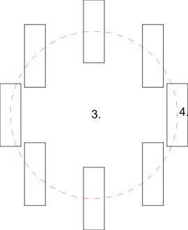

- Selezionare le entità che si desidera ruotare e controruotare.
- Avviare questo strumento.
- Impostare il centro per la rotazione principale con il mouse o inserire
una coordinata nella riga di comando.
- Impostare il centro di rotazione per i singoli oggetti. Questo secondo
centro di rotazione viene ruotato insieme alle entità intorno al primo
centro.
- Viene visualizzata la finestra di dialogo Ruota due in cui è possibile
immettere l'angolo di rotazione e l'angolo di contro-rotazione.
Per eliminare le entità originali, selezionare "Elimina originale",
per copiarle. È inoltre possibile creare un determinato numero di copie
selezionando "Copie multiple".
Le nuove entità sono collocate sullo stesso livello degli originali e
hanno gli stessi attributi.
- Fare clic su "OK" per ruotare le entità.
